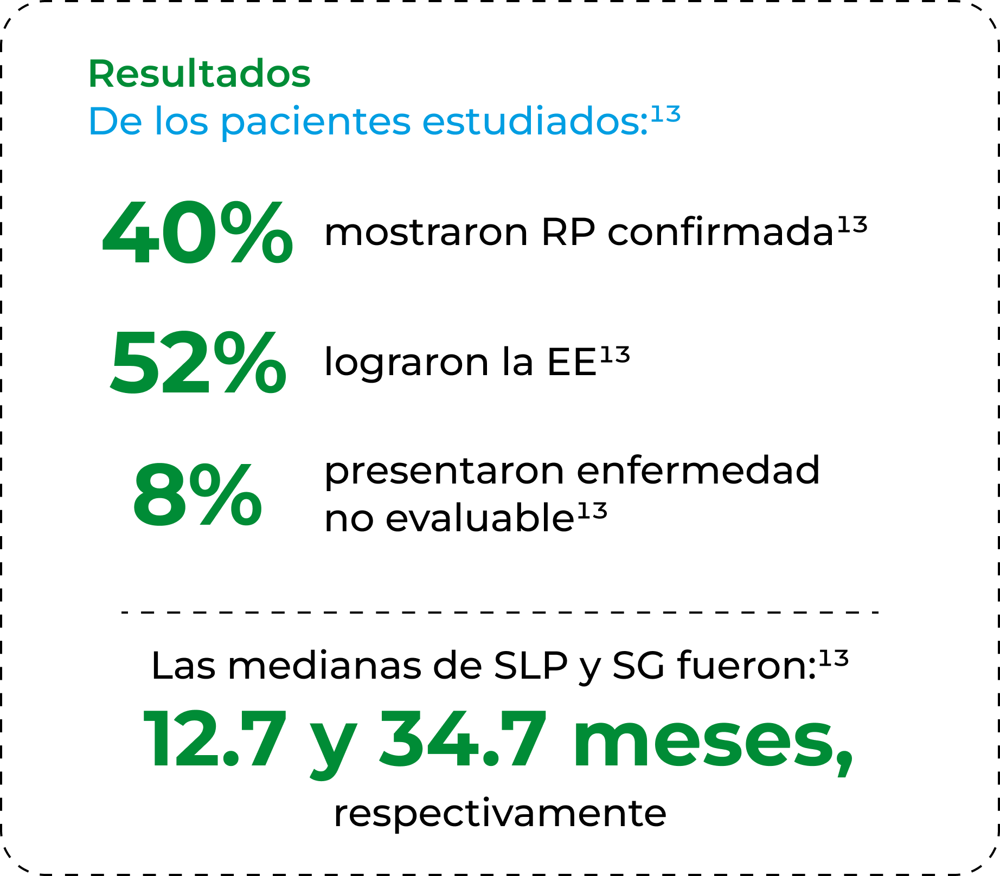

TIME-LINE DE SU DESARROLLO CLÍNICO
Cabozantinib en cáncer de tiroides diferenciado
Cabozantinib en cáncer de tiroides diferenciado
Desde el estudio en fase I de
cabozantinib para CMT se observó
que en el cáncer de tiroides
diferenciado (CDT) también hay
activación de MET, VEGFR2 y RET.12,13
cabozantinib para CMT se observó
que en el cáncer de tiroides
diferenciado (CDT) también hay
activación de MET, VEGFR2 y RET.12,13
Esto sugirió la posibilidad de que
cabozantinib podría ser eficaz en
este escenario clínico.12,13

cabozantinib podría ser eficaz en
este escenario clínico.12,13